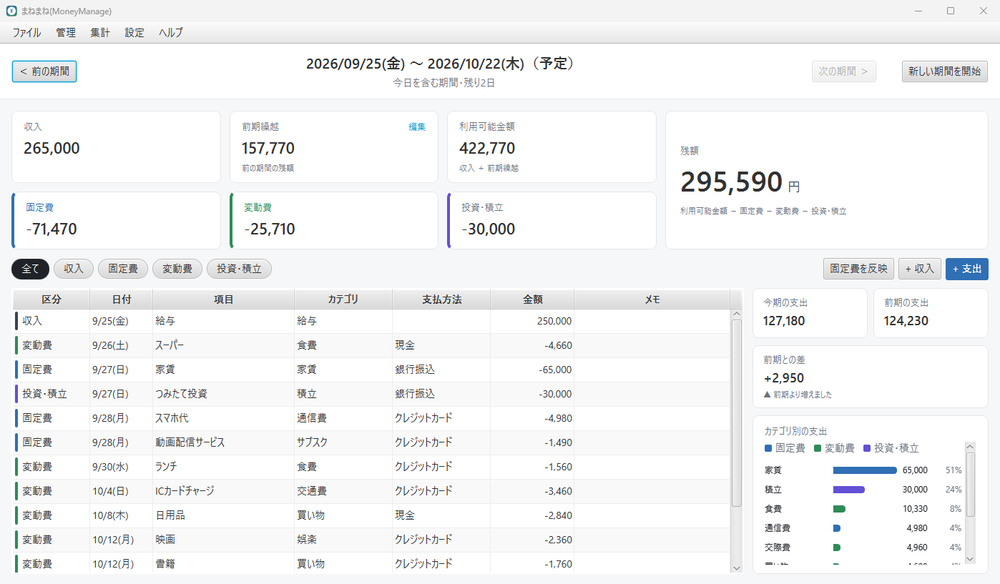

給料日で区切る期間管理
給料日から次の給料日の前日までが1つの期間。土日の給料日は直前の金曜日として扱います。
まねまね(MoneyManage) は、月ではなく「給料日」を区切りにして収入・支出・繰越を管理する家計簿です。使える金額と残りがすぐに分かり、余った分も足りない分も、次の期間へ自動で引き継ぎます。

入力は手早く、確認はひと目で。家計簿を続けるための機能をそろえています。
給料日から次の給料日の前日までが1つの期間。土日の給料日は直前の金曜日として扱います。
期間の残額は、プラスもマイナスも次の期間の「前月繰越」へ。必要なら手入力で上書きもできます。
家賃やサブスク、積立を登録しておけば、新しい期間を始めるときに明細へまとめて登録します。
口座ごとの貯金残高、旅行など目的ごとの積立の目標と達成率、貯金から使ったお金をグラフで確認できます。
期間ごとのカテゴリ別の支出と前月比較、1月〜12月の年間収支、ポイントで得した額の累計を確認できます。
明細・集計・カテゴリ別を Excel に書き出し。同じ形式のファイルから明細を取り込めます。
インターネットに送信せず、パソコン内に保存。バックアップと復元で PC の移行もできます。
明細の一覧は、列の見出しから Excel のフィルターのように並べ替え・絞り込みができます。
設定でオンにすると、アプリを開くときにパスワードを確認します。家族と共用の PC でも安心です。
画像を選ぶと拡大して表示します。画面の金額はすべて説明用の架空のデータです。
インストールは不要です。ダウンロードして展開すれば、すぐに使い始められます。
Windows 用の ZIP ファイルをダウンロードします。
ZIP を右クリックして「すべて展開」。Manemane フォルダの Manemane.exe をダブルクリックします。
初回だけ、通常の給料日と最初の期間の開始日を設定します。あとは明細を入力するだけです。
無料でお使いいただけます。
Manemane-0.4.1-windows.zip1cf13052d9dc928cfda69d7cdb0edc76c1a62f4bc02b963fa27a62f98fab6d6fManemane フォルダの中身は、まとめて置いたまま使ってください。%APPDATA%\Manemane に保存されます。アプリを新しくしても引き継がれます。無料です。
パソコンの %APPDATA%\Manemane\kakeibo.db に保存されます。インターネットへの送信は行いません。
現在は Windows 版のみです。
移せます。古いパソコンで「ファイル」→「バックアップ…」を実行し、新しいパソコンで「ファイル」→「バックアップから復元…」を選んでください。
アプリが書き出す Excel と同じ形式（「明細」シート）にすれば取り込めます。取り込む前に、取り込める行・取り込めない行を確認できます。形式は 使い方の「Excel」 を参照してください。
Manemane フォルダを削除してください。データも消す場合は %APPDATA%\Manemane フォルダも削除します。